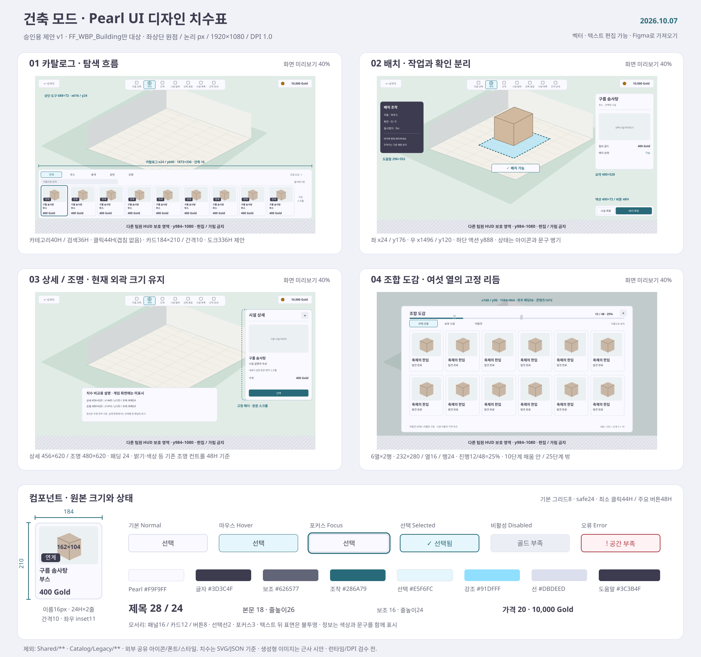

01 · 시설 목록

이미지는 분위기·정보 위계 검토용입니다. 월드 장면과 시설 표현은 생성형 콘셉트이며 실제 게임 변경 화면이 아닙니다. 최종 배치 치수는 아래 SVG·JSON이 기준입니다. 시안의 가격·수량·조합명은 예시이며 게임의 실제 데이터를 변경하지 않습니다.
디자이너용 치수 기준
1920 × 1080 논리 해상도 · DPI 1.0 · 기본 8px 단위 · 화면 안전 여백 24px
| 요소 | 정확한 크기 | 기준 |
|---|---|---|
| 시설 카드 | 184 × 210 | 현재 가상화 셀 유지 |
| 카드 썸네일 | 162 × 104 | 기존 비율 유지 |
| 가로 카드 간격 | 10 | 현재 셀 간격 유지 |
| 카탈로그 도크 | 1872 × 336 | 높이 324 → 336 제안 |
| 시설 정보 / 조명 | 456 × 620 / 480 × 620 | 현재 외곽 크기 유지 |
| 배치 요약 패널 | 400 × 520 | 제안 |
| 주요 버튼 / 클릭 영역 | 48H / 최소 44H | 작은 외형에는 클릭 여백 확보 |
| 도감 카드 | 232 × 280 · 간격 16 | 6열 제안 |
현재 크기는 빌더·최근 저장 검증 기록을 확인한 값입니다. 이번 작업에서 Unreal 에디터 실측이나 런타임 검증은 수행하지 않았습니다. 작은 해상도는 기존 DPI 곡선에 맞춰 승인 후 검증합니다.

유지할 시각 규칙
PearlInkActionCyanGold
- 본문 뒤는 불투명한 표면, 시설명은 두 줄, 가격은 같은 높이에 정렬합니다.
- 선택·오류는 색상과 아이콘·문구를 함께 사용합니다.
- 카드·버튼·텍스트는 실제 UMG 위젯으로 분리합니다. 이미지 한 장을 UI로 넣지 않습니다.
이번 승인 대상과 보호 범위
승인 대상은 이 다섯 화면에 보이는 건축 UI의 시각 방향과 치수 제안입니다.
FF_WBP_Building/Catalog시설 목록·타일FF_WBP_Building/Controls건축 도구·배치 상태FF_WBP_Building/Facility상세·조명 패널FF_WBP_Building/FacilityCodex조합 도감 목록
보호: Shared/**, Catalog/Legacy/**, 다른 팀원 UI, 폴더 밖 공통 폰트·아이콘·금화·머티리얼 원본. 하단 공용 HUD는 시안에서도 위치 참고용이며 재디자인 대상이 아닙니다.
매출 순위·다중 선택·건축 설정의 별도 상세 화면, 일반 시설 정보의 모든 탭과 유료 프로그램 화면은 이번 5장만으로 변경 승인된 것으로 보지 않습니다. 필요한 경우 같은 규칙의 후속 시안을 먼저 제시합니다.
레퍼런스 → 적용한 원칙
- Mobbin · Bottom Sheet — 하단 탐색 패널과 넓은 작업 공간.
- Mobbin · Chip — 아이콘+이름, 명확한 선택 필터.
- Mobbin · Card — 이미지·시설명·가격의 고정된 위계.
- Cities: Skylines II · Road Tools — 도구별 스냅·수치 안내·배치 미리보기.
- Cities: Skylines II · Zones & Signature Buildings — 선택 대상에 관련된 조건을 우선 표시.
Mobbin은 공개 패턴 문서와 공개 예시를 확인했습니다. 로그인 제한 뒤의 전체 앱 흐름을 검토한 것은 아닙니다. 참고 원칙을 프로젝트의 기존 기능에 맞춰 재구성했습니다.
편집 가능한 레이아웃 · 컴포넌트 시트
SVG를 Figma·Illustrator 등으로 가져오면 도형과 텍스트를 분리해 편집할 수 있습니다. 화면 배치도는 40% 축소이며 표기 수치는 1920 × 1080 기준입니다.
